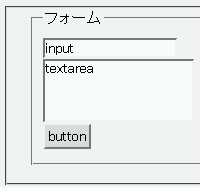
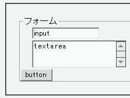

fieldset要素の子に当たるinput要素やtextarea要素に、form要素に設定された横方向マージンが適用されてしまう。
<form action="#" style="margin-left:20px;"> <fieldset> <legend>フォーム</legend> <input type="text" name="in" value="input"><br> <textarea name="tx">textarea</textarea><br> </fieldset> </form>
input、textarea、buttonの各フォームアイテムを配置しています。左マージンはform要素だけに設定しています。
Moz1.0での表示（標準モード）
WinIE6.0での表示（標準モード）
フォームアイテム関係の要素がfieldset要素の直下に位置しないように、p要素やdiv要素などを利用してください。
<form action="#" style="margin-left:20px;"> <fieldset> <legend>フォーム</legend> <div><input type="text" name="in" size="20" value="input"><br> <div><textarea name="tx" cols="20" rows="3">textarea</textarea><br> <div><button type="button" name="bt">button</button></div> </fieldset> </form>
WinIE6.0では標準・互換モードともに不具合の発生が確認されました。